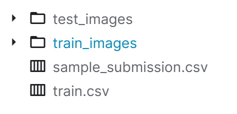
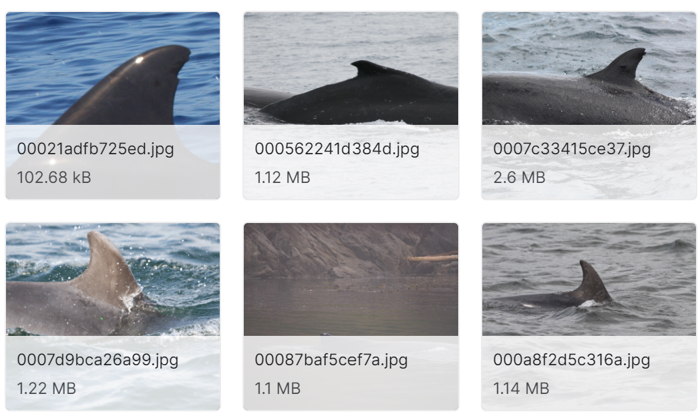
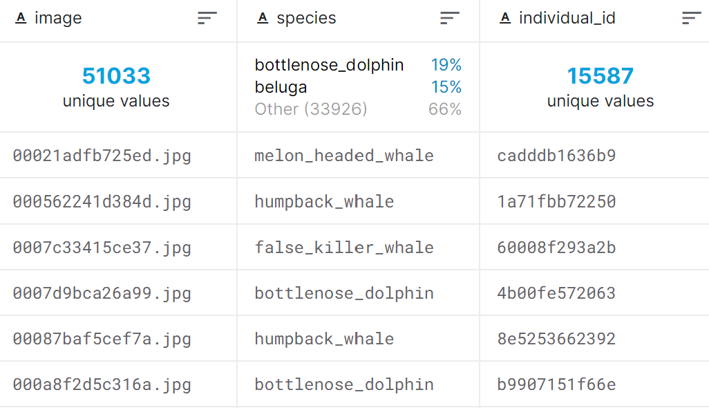
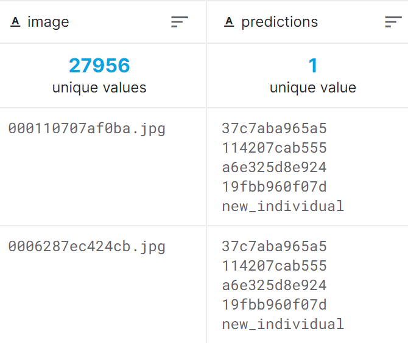
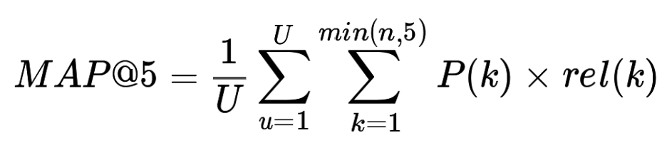
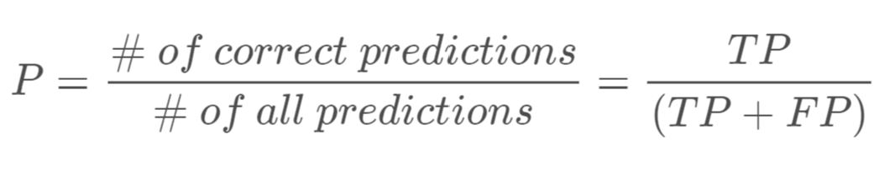
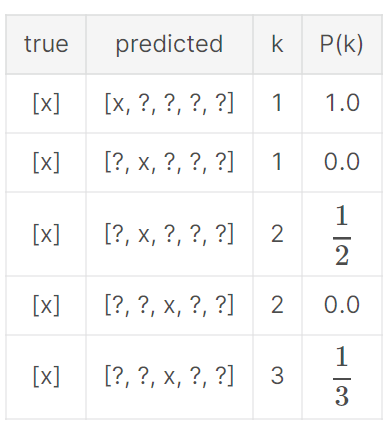
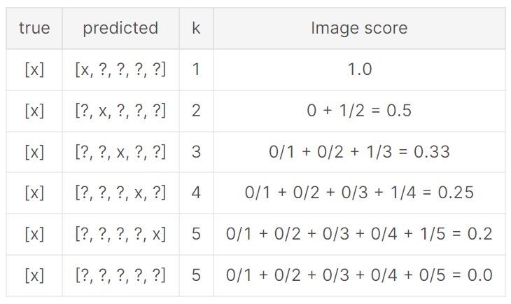
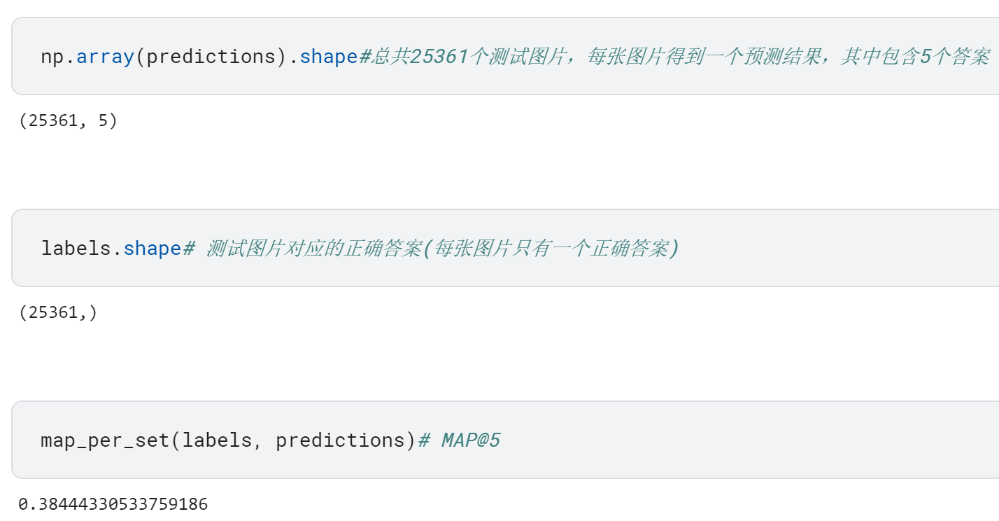
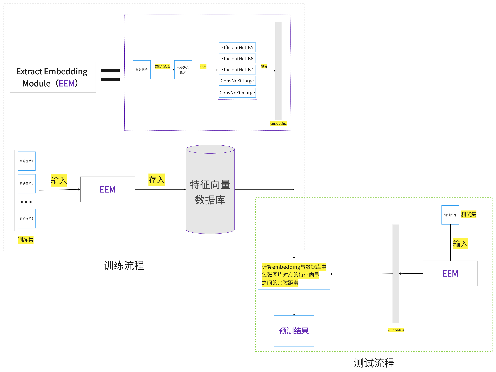

鲸鱼和海豚识别竞赛解析:全流程概述
背景描述
我们可以使用人类的指纹和面部特征来识别具体的人（指纹识别，人脸识别），类似地，我们也可以根据海洋生物的尾巴，背鳍，头部等特征识别并跟踪海洋生物。
然而，依赖于研究人员人眼观察的识别方法效率太低，而借助自动化鲸鱼和海豚识别模型，研究人员可以将图像识别时间减少99％以上。
查看数据集
数据集格式如下：

其中，test_images和train_images文件夹中分别存储了测试图片和训练图片，就像这样：

train.csv总共有3列，如下:

第一列是图片文件名(image)，第二列是该图片中的生物所属种类(species)，第三列是该图片中的生物的专属id(indivadual_id)。
sample_submission.csv是所需提交文件的样例，包含每张图片对应的预测结果，由于题目需要预测的是该图片最有可能属于的前5个individual_id，因此这里的predictions中包含5个不同的indivisual_id：

任务描述
使用train_images作为训练集，对test_images中的每张图片中的生物individual_id进行预测。
每一个生物个体对应一个不同的individual_id，本题要求预测的正是这个indivadual_id。如果看做是分类问题的话，那么训练集中总共有多少个不同的生物个体，就需要预测多少类+1，比如总共n类，那么这就可以看做是一个n+1分类的任务。
为什么是n+1呢？因为有一种特殊情况，那就是测试集中的图片中的生物并没有在训练集中出现过，此时模型应该将该图片预测为new_individual类。
至于所给的species，是每个个体所属的大类，在接下来的操作中基本用不到，因此可以忽略。
评估指标
首先明确：对于每张测试图片，都会预测5个最有可能的答案。
评估指标计算公式如下：

其中，U是测试图片总数，P(k) 是预测结果中前k个答案的精准率(Precision)， n是 每张图片预测的结果中所含答案的数量(ps：这里指的是按照5个答案的排列顺序，当只考虑前k个答案时，那么n就等于3)，rel是指示函数，只有当第k个答案是正确答案时才取1，否则为0.
以上解释来自官方，可能有些绕，下面一步一步进行详细解释。
Precision
预测为正样本且预测正确的数量除以全部预测为正样本的数量，就是精准率Precision：

Precision @k【P(k)】
按照预测结果中5个答案排列位置的顺序，排在第一个的答案对应的k为1，排在第二个的答案对应的k为2，以此类推。
P(k)就是只考虑前k个预测答案时对应的精准率。
举个例子：

x是正确的预测答案，?是错误的预测答案。
Precision @5【P(5)】
即k取5时的结果：

可以看到，由于每张图片只有一个正确答案，因此只有正确答案对应的P(k)不等于0，因此在代码实现时只需考虑正确答案所在位置即可。
MAP@5代码实现
1 | def map_per_image(label, predictions): |
测试一下：

解决方案
这里给出解决方案的完整流程图，关于每个模块更详细的介绍，请期待后续文章。

参考：